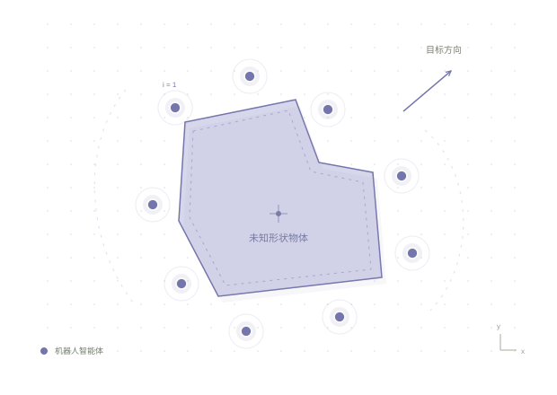
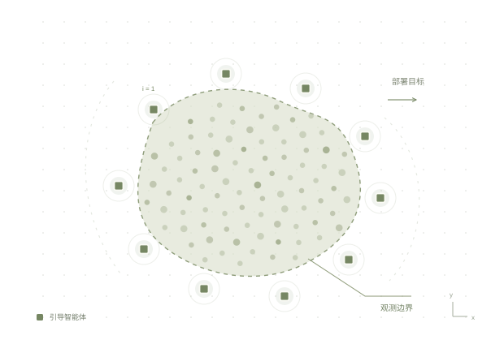

DBACT01 / 研究概念
研究概念示意↗
正在进行
未知物体，如何共同搬运？
Decentralized Boundary-Aware Cooperative Transport
探索多个机器人如何在缺少物体先验形状信息的情况下，通过局部感知与协作完成搬运任务。
Kaixin Wu信息学与数据科学 · 博士研究生
我关注多智能体系统中的感知与协作，研究机器人如何共同搬运未知物体，以及如何为复杂人群设计自适应引导方法。
HIROSHIMA, JAPAN PERCEPTION → COOPERATION

从局部感知，探索群体协作。
Decentralized Boundary-Aware Cooperative Transport
探索多个机器人如何在缺少物体先验形状信息的情况下，通过局部感知与协作完成搬运任务。

Adaptive Guide-Agent Deployment for Unknown Dynamic Crowds
研究如何根据人群分布安排引导智能体，并逐步探索适应环境变化的协作引导方法。
Yi Li, Yanfeng Lu, Kaixin Wu, Yuan Fang, Chaodan Zheng, Jiangang Zhang
IEEE Transactions on Applied Superconductivity, 34(8), 1–4
Kaixin Wu
2024 5th International Conference on Computer Vision, Image and Deep Learning (CVIDL), 852–857
Kaixin Wu
Proceedings of ITEI 2022 · EAI, published 2023
HIROSHIMA, JAPAN
我是 Kaixin Wu（开心），自 2026 年 4 月起在广岛大学复杂系统科学研究室攻读博士，导师为 Masaki Ogura 教授。
我拥有计算机科学硕士与软件工程学士背景，曾参与大语言模型与形式化验证、计算机视觉及人工智能部署相关研究。目前关注机器人协作与人群引导，并希望将研究用于实际问题。
博士研究生 · 信息学与数据科学
计算机科学 · 理学硕士
软件工程 · 学士
特殊研究生（访问研究）
复杂系统科学研究室。
研究助理
结合大语言模型与形式化验证，研究代码自动修复。
研究助理
面向复杂天气下无人机电力巡检的计算机视觉研究。
我的学术档案与公开项目，可从以下入口了解。